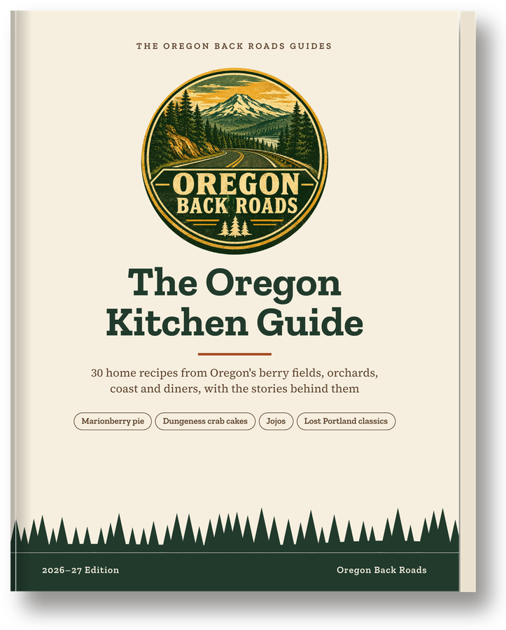
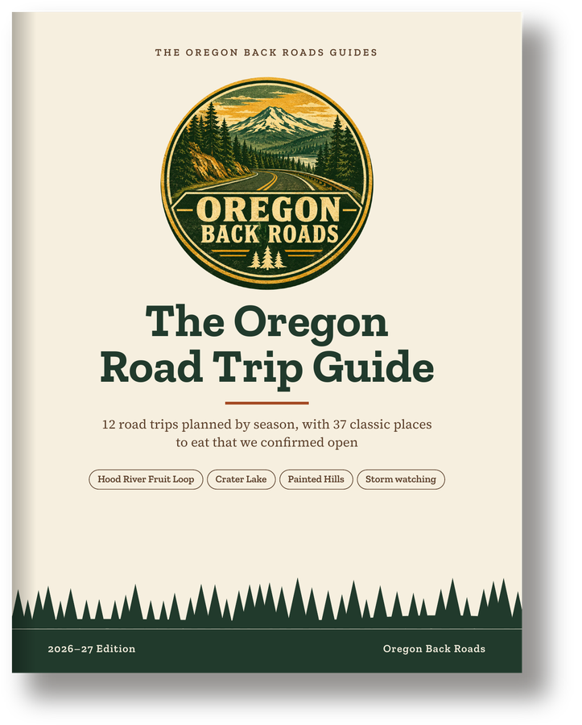
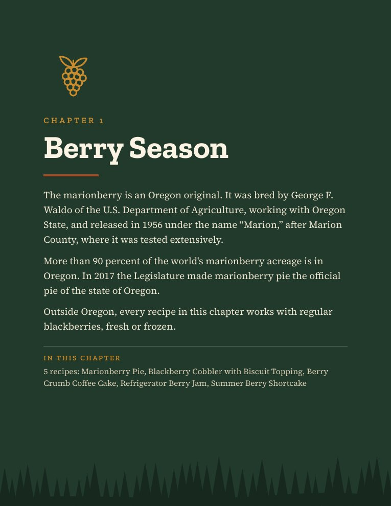
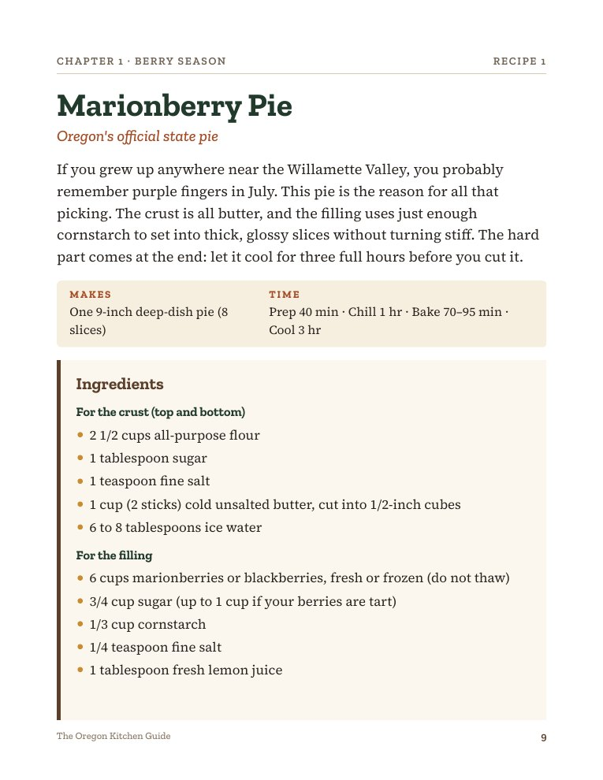
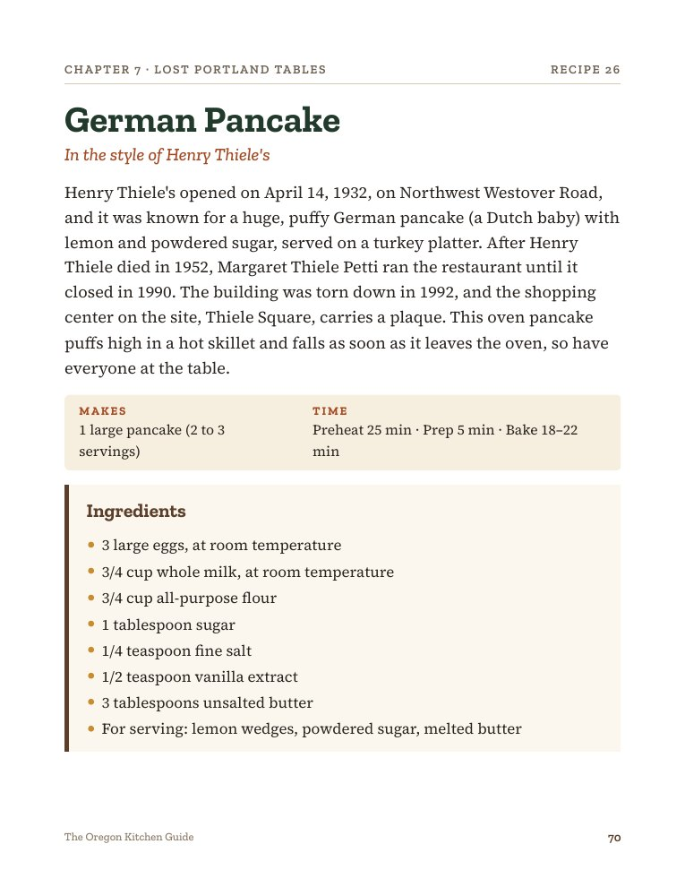
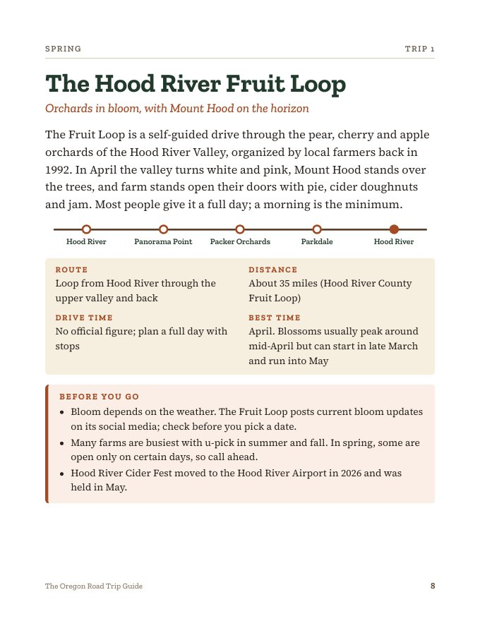
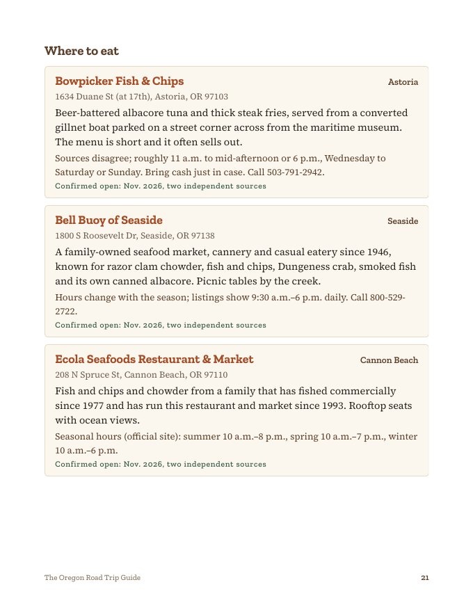
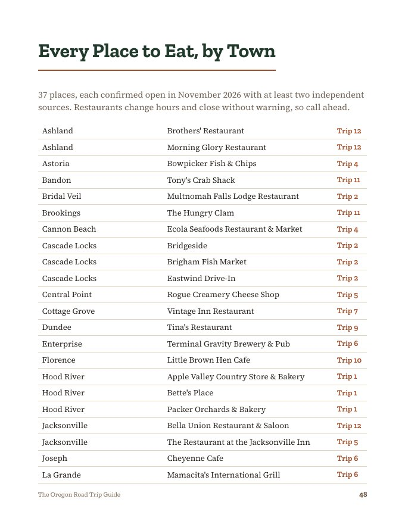

Large-print PDF guides for people who love Oregon. One brings the old recipes back to your kitchen. One plans the drives, season by season, with places to eat that we checked are still open. Every fact is checked and every source is listed.

30 home recipes, from marionberry pie and Dungeness crab cakes to jojos, plus five dishes from Portland restaurants that are long gone. A short story with every recipe.

12 drives planned by season, from the Hood River Fruit Loop to the Painted Hills, with 37 classic places to eat, each one confirmed open in November 2026.
Written for a home kitchen: ordinary pans, grocery-store ingredients, and a swap for anything that's hard to find outside Oregon.
Marionberry pie (the official state pie), blackberry cobbler, berry crumb coffee cake, refrigerator jam, berry shortcake.
Pear upside-down cake, pear crisp with hazelnuts, Bing cherry custard bake, pinot noir poached pears.
Hazelnut shortbread, hazelnut brittle, chocolate hazelnut brownies, green beans with hazelnut brown butter.
Roasted salmon with lemon-dill butter, Dungeness crab cakes, clam chowder, fish and chips, smoked salmon spread.
Baked mac and cheese, cheddar drop biscuits, creamy chanterelles on toast.
Jojos with buttermilk ranch, chicken-fried steak with country gravy, marionberry milkshake, albacore tuna melt.
Five dishes from Portland restaurants people still talk about. See below.
Safe cooking temperatures, ingredient swaps, kitchen conversions, a printable shopping list, and every source we used.
The pages are set in large 14-point type with numbered steps, so you can read them from the counter without hunting for your glasses.



The restaurants are gone. The dishes don't have to be.
These are our own recipes, written to bring back the dishes these places were known for. They are not the restaurants' recipes, and Oregon Back Roads has no connection with the restaurants or the owners of their names.
Each trip gives you the route, the distance, the best time to go, the stops worth making and what to check before you leave: permits, fees, road closures and seasonal hours.
The Hood River Fruit Loop · The Old Columbia River Highway · Willamette Valley Farm Towns
The North Coast · Crater Lake and the Upper Rogue · Wallowa Country and Hells Canyon
Covered Bridges and the McKenzie River · High Desert to the Painted Hills · Wine Country at Harvest
Whales and Waves on the Central Coast · South Coast Storms and Sea Stacks · Gold-Rush Towns at Christmas
Fish and chips from a boat in Astoria, a cheese shop in Central Point, an old drive-in in Sisters. Each one confirmed open in November 2026 by two independent sources.
Before-you-drive tips on parks passes, gas and cell service, an index of every place to eat by town, a printable road trip checklist and every source we used.



Get the Road Trip Guide · $14.99
Hours and fees change. The guide tells you what to call ahead about, and every place lists the date we confirmed it.
14-point type and plenty of space, so you can read it without hunting for your glasses.
American measures throughout, with a conversion page at the back.
No marionberries? Use blackberries. No Dungeness? Any lump crab. A swap for everything hard to find.
Safe internal temperatures from FoodSafety.gov, and plain warnings for hot oil, hot sugar and wild mushrooms.
Every date, name, price and opening was checked, and the sources are listed at the back of each guide.
Read it on a tablet or computer, or print a recipe for the counter. Includes a printable shopping list.
Small, quiet Oregon towns for anyone thinking about a move, with home prices, climate, the nearest hospital and the honest pros and cons. Every number dated and sourced.
All three guides together for one lower price.
Follow Oregon Back Roads on YouTube to hear when it's ready.
A PDF file of the guide you choose, 2026–27 Edition. The Kitchen Guide has 86 letter-size pages and 30 recipes. The Road Trip Guide has 60 pages, 12 trips and 37 places to eat. Each is sold on its own. You can read them on a tablet, phone or computer, or print them at home.
Checkout is handled by Hotmart, our payment partner. Right after you pay, Hotmart sends you an email. Click the button in that email, create a password, and the guide is waiting under “My purchases,” ready to download. If you don't see the email within a few minutes, check your spam folder or write to us at oregonbackroadsguides@gmail.com.
Yes. Checkout accepts major credit and debit cards, and for buyers in the United States it also offers PayPal and Apple Pay.
No. Every recipe in the book is our own. The five Lost Portland dishes are written to bring back what those places were known for, and the history that goes with them was checked against the sources listed in the book.
Yes. Every recipe uses ingredients from a regular grocery store, and anything that's hard to find outside Oregon (marionberries, Dungeness crab, chanterelles) comes with a swap.
Every place was confirmed open in November 2026 by two independent sources, and each one shows that date. Small-town places change hours with the seasons and sometimes close, so the guide tells you to call ahead. If you find one that has closed, write to us and we'll fix it in the next update.
No, it's a digital PDF. You're welcome to print it for your own use.
You have 7 days to ask for a full refund through Hotmart, no questions asked.
Instant download · $14.99 each
Secure checkout by Hotmart · 7-day money-back guarantee